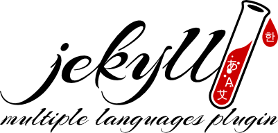

Jekyll Multiple Languages is an internationalization plugin for Jekyll. It compiles your Jekyll site for one or more languages with a similar approach as Rails does. The different sites will be stored in subfolders with the same name as the language it contains.
The plugin was developed as a utility at Daresay

Are you using this plugin? Could you test and verify incoming PRs? Please give us a shout!
1.6.0 is the current stable release.
The support for Octopress is dropped, but the plugin should still work with it since Octopress core is Jekyll. Octopress 3 now has its own multi languages plugin: https://github.com/octopress/multilingual
This plugin is available as a Ruby gem, https://rubygems.org/gems/jekyll-multiple-languages-plugin.
Add this line to your application's Gemfile:
gem 'jekyll-multiple-languages-plugin'
And then execute: $ bundle install
Or install it yourself as: $ gem install jekyll-multiple-languages-plugin
To activate the plugin add it to the Jekyll _config.yml file, under the plugins option:
ruby
plugins:
- jekyll-multiple-languages-plugin
See the Jekyll configuration documentation for details.
_plugins folder, create a new folder called jekyll-multiple-languages-plugin.lib, that is inside the downloaded repository, into your _plugins/jekyll-multiple-languages-plugin folder of your Jekyll project.If your Jekyll project is in a git repository, you can easily manage your plugins by utilizing git submodules.
To install this plugin as a git submodule:
sh
$ git submodule add git://github.com/screeninteraction/jekyll-multiple-languages-plugin.git _plugins/multiple-languages
To update:
sh
$ cd _plugins/multiple-languages
$ git pull origin master
Add the languages available in your website into your _config.yml (obligatory):
yaml
languages: ["sv", "en", "de", "fr"]
The first language in the array will be the default language, English, German and French will be added into separate subfolders.
To avoid redundancy, it is possible to exclude files and folders from being copied to the localization folders.
yaml
exclude_from_localizations: ["javascript", "images", "css"]
In code, these specific files should be referenced via baseurl_root. E.g.
<link rel="stylesheet" href="{{ "/css/bootstrap.css" | prepend: site.baseurl_root }}"/>
Create a folder called _i18n and add sub-folders for each language, using the same names used on the languages setting on the _config.yml:
To add a translated string into your web page, use one of these liquid tags:
liquid
{% t key %}
or
{% translate key %}
This will pick the correct string from the language.yml file during compilation.
The language.yml files are written in YAML syntax which caters for a simple grouping of strings.
yaml
global:
swedish: Svenska
english: English
pages:
home: Home
work: Work
To access the english key, use one of these tags:
liquid
{% t global.english %}
or
{% translate global.english %}
You can also access translated strings by accessing the site.translations hash, this allows you to loop through your translations within Liquid:
liquid
{% for item in site.translations[site.lang]["my_nested_yaml_collection"] %}
<p>{{ item[0] }} -> {{ item[1] }}</p>
{% endfor %}
The plugin also supports using different markdown files for different languages using the liquid tag:
liquid
{% tf pagename/blockname.md %}
or
{% translate_file pagename/blockname.md %}
This plugin has exactly the same support and syntax as the Jekyll's built in liquid tag:
liquid
{% include file %}
so plugins that extend its functionality should be picked up by this plugin as well.
To use localized pages with permalinks, you must provide a default permalink and the language specific permalinks, for example, permalink_fr for French.
To translate links, you must also add a unique namespace on the YAML front matter along with the permalinks.
Example:
layout: default
namespace: team
permalink: /team/ permalink_fr: /equipe/
```
And then you can use the translate link liquid tag like this:
or the longer version:
Sometimes it is convenient to add keys even in template files. This works in the exact same way as in ordinary files, however sometimes it can be useful to include a different string in different pages even if they use the same template.
A perfect example is this:
html
<html>
<head>
<title>{% t page.title %}</title>
</head>
</html>
So how can I add different translated titles to all pages? Don't worry, it's easy. The Multiple Languages plugin supports Liquid variables, as well as strings so, define a page variable in your page definition
layout: default title: titles.home
```
and <title>{% t page.title %}</title> will pick up the titles.home key from language.yml
yaml
titles:
home: "Home"
This plugin gives you the variables
```liquid {{ site.lang }}
and
{{ site.baseurl_root }} ```
to play with in your template files.
This allows you to create solutions like this:
liquid
{% if site.lang == "sv" %}
{% capture link1 %}{{ site.baseurl_root }}/en{{ page.url}}{% endcapture %}
<a href="{{ link1 }}" >{% t global.english %}</a>
{% elsif site.lang == "en" %}
{% capture link2 %}{{ site.baseurl_root }}{{ page.url }}{% endcapture %}
<a href="{{ link2 }}" >{% t global.swedish %}</a>
{% endif %}
This snippet will create a link that will toggle between Swedish and English. A more detailed description of the variables used follows:
| Name | Value | Example |
|---|---|---|
| site.lang | The language used in the current compilation stage | en |
| site.baseurl | Points to the root of the site including the current language | http://foo.bar/en |
| site.baseurl_root | Points to the root of the page without the language path | http://foo.bar |
| page.url | The current page's relative URL to the baseurl | /a/sub/folder/page/ |
Depending on the theme, or your preferences, you need to create a "template" page in the root folder or in a folder (ex. _pages). Inside each page (in this example an about.md) you should have at least the following in the header and body:
layout: page title: About permalink: /about/
{% translate_file about/about.md %} ```
Inside each of the language folders, you should create mirror pages to provide the actual content for that language (ex. i18n/es/about/about.md). Make sure to erase the headers from those md files, or else your site will break.
There are no global posts. The posts are localized by language. And your posts will live in the _i18n/[lang]/_posts directory. So if, for example, you have English language on your website you should put your posts on _i18n/en/_posts directory.
This project is available under the MIT License.
This repository has an example website where you can test the plugin.
After downloading the repository, get into the example directory and run: bundle install to install the newest version of Jekyll (edit the Gemfile to install another version) and all other dependencies.
Then run bundle exec jekyll serve to start the Jekyll server. Using your web browser, access the address http://localhost:4000.
Imagine you want to add German pages on the test website. First, add a new language to the list of languages on _config.yml:
ruby
languages: ["it", "en", "es", "de"]
Create a new folder for the language under the _i18n folder and add a markdown file containing the translation, just like on the other language folders, and you're done.
Let's say you want to create an about page for the example website, you will create an about.html page on the root of the website (same place as index.html), with this:
layout: page title: About permalink: /about/
{% translate_file about/about.md %} ```
Then, create a file named about.md under _i18n/en with the English content. Repeat this for the other languages (_i18n/es/about.md ...). When running the website, visit the address http://localhost:4000/about to see the English version, http://localhost:4000/es/about for the Spanish one, etc.
site.static_files would be empty on subsites if exclude_from_localizations is used.site.translations hash containing the translated strings to Liquid.translate_filegit checkout -b my-new-feature)git commit -am 'Add some feature')git push origin my-new-feature)| User | Contribution |
|---|---|
| @pedrocarmona | support for Jekyll 3 |
| @elotroalex | added a how to create page to README |
| @mohamnag | permalink generation bug fix |
| @jasonlemay | support for localized links |
| @ctruelson | support for excluding posts |
| @Bersch | better paths |
| @Davrandom | plugin usage example |
| @agramian | fallback to default language |
| @h6 | exclude files from translation |
| @leoditommaso | update the example page |
@kurtsson from Daresay (https://daresay.co)
Below is a list of other language plugins for Jekyll (2019/06/27):
Seems to be maintained: Polyglot Jekyll Language Plugin * jekyll-task-i18n
Seems to be unmaintained / abandoned: jekyll-i18n_tags Octopress Multilingual Jekyll Multiple Languages Jekyll-Multilingualism Jekyll::Languages Jekyll I18n support jekyll-multilingual jekyll-msgcat jekyll-localize Jekyll i18n Filter jekyll-localization Jekyll i18n
This plugin will in the future try to merge all pertinent features of all those plugins into it.